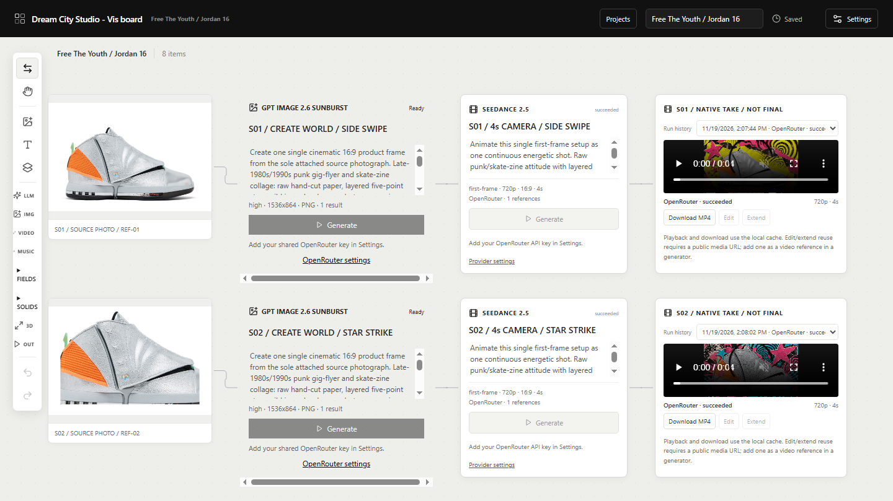
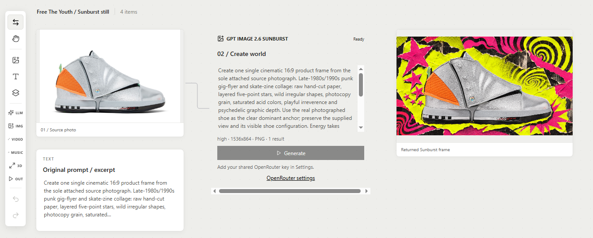
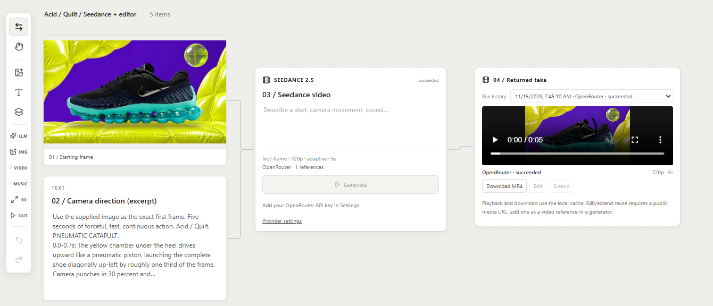
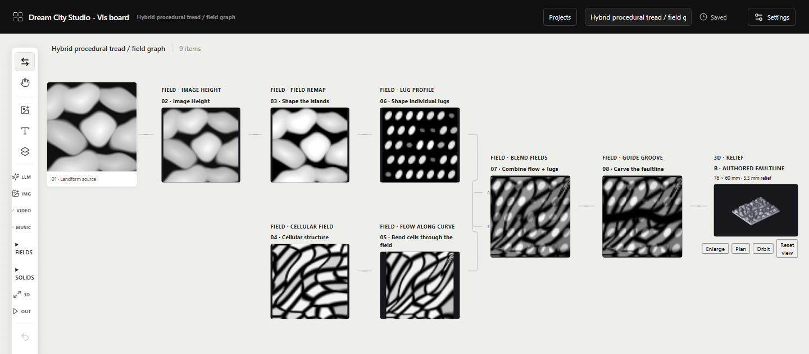
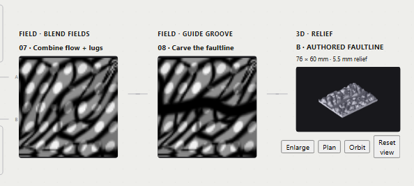

PRODUCT CASE STUDY BUILT FOR DREAM CITY STUDIO
Dream City Studio
Visualization Lab.
Direct the work.
Let the agent wire it.
A visual workspace for collecting references, setting direction and reviewing what comes back. The artist makes the creative calls. The agent can assemble the workflow on the same canvas.
See how it works
From reference
to frame.
Group images and a prompt into one brief, or wire references individually. For the Jordan 16 study, Sunburst used a product photo and written direction to create a new, punk-zine frame.

ARTIST
Keep the creative calls.
Arrange references, write direction and compare takes in context. Keep the prompt next to the images it describes.
AGENT
Skip hand-wiring.
Give the agent a goal. It can add and connect the graph, revise it as direction changes, run generation when approved, and put results back on the board. The connections stay visible and editable.
Direct the shot.
For Acid / Quilt, a first frame and a separate camera-direction note both feed the Seedance 2.5 generator. The take comes back into its own playable output node.

Build with fields.
This tread study combines two editable branches. One turns a reference image into a lug profile; the other generates cells and steers them along a curve. They meet in a blend, then a guide groove shapes the relief.


01 / REFERENCE BRANCH
Shape the profile.
Image Height and Field Remap feed the Lug Profile node.
02 / PROCEDURAL BRANCH
Guide the pattern.
Cellular Field feeds Flow Along Curve for direction and spacing.
03 / MERGE
Resolve the relief.
Field Blend combines both branches. Guide Groove feeds Height Map to Mesh.


Direct in chat.
Create on the board.
Give the agent creative direction in chat. It handles the technical setup in Studio: grouping references, wiring nodes and organizing the board so the work is ready to review.
01 / YOU BRIEF THE AGENT
“Use this shoe image as the first frame. Start low, then push in fast. Keep the whole shoe readable. Put the take next to the reference.”
Example direction in chat
02 / THE AGENT SETS UP STUDIO
- Groups references and directions
- Wires the generators and outputs
- Organizes shots and returned takes
Compare takes, pick a direction, and ask for changes. The agent updates the board; you stay focused on the visuals.
A tool built for Dream City Studio.